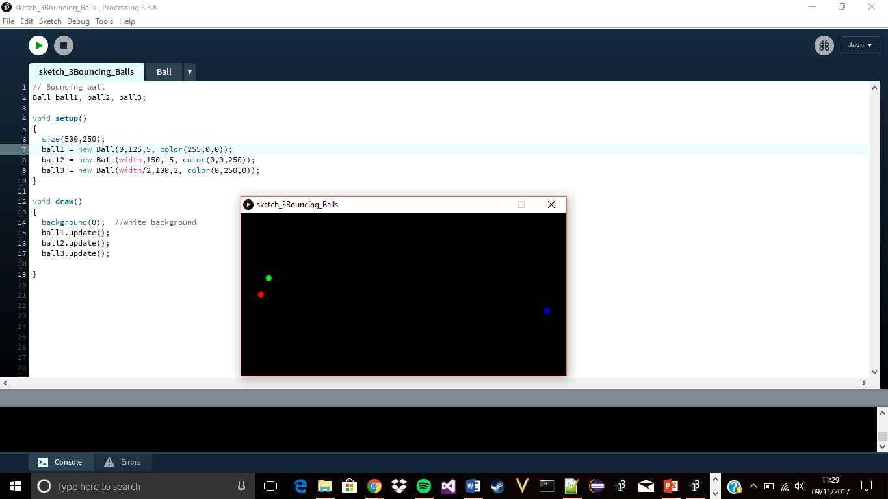
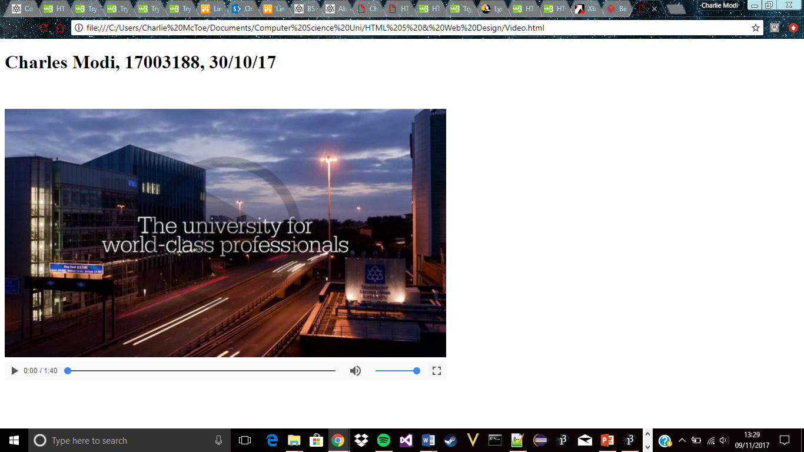

Programming Using Processing Overview
This unit introduces computer programming in a high level programming language and includes principles and practice in problem solving, program design, solution implementation and testing, including:
- Introduction to programming using Java
- Software life cycle: importance of correctly identifying the problem, iterative nature of software development, software maintenance
- Design methodology: the application of the top-down design method using step-wise refinement to produce pseudo-code solutions to problems, incorporating constructs for sequence selection, iteration, abstraction and re-use
- Verification and testing: the use of desk-top execution, simple debugging strategies and more formal approaches to testing e.g. black box white box boundary analysis and equivalence classes
- Applications of standards and conventions: software maintenance and developing a professional approach to coding
- Data types – primitive types: constants, variables, arrays and simple structured data
- Constructs and features of a structured high level programming language: control constructs, operators, procedural abstraction, simple I/O and use of libraries
- Object orientated design and implementation: inheritance and polymorphism
- Software support environment: use of an IDE editors compiler/linkers and operating systems
Progress so far..
So far, we are currently using Java Processing to introduce ourselves to object oriented programming, learning the vocabulary of commands, the syntax and programming constructs.
In recent weeks we have been taught design methodology using the application of top-down method, by breaking the problem into considerably smaller problems step by step which makes it easier to understand the current task and to produce pseudo-code solutions to problems.
What we’ve learnt so far:
- For and While loops
- Procedures & Modular code
- If Statement and Animation
- Using Classes
Out of the four other modules, I consider this the most enjoyable because since the lectures are on Monday’s, you get almost all the week to prepare yourself for the lab session and you can pace yourself. Compared to the Web Development, Information System and CSF, this unit is the most relaxed and enjoyable.
This week in the Lab sessions, using classes we produced a program of two cars racing, using objects, members, methods and constructors. For this example I've added what i've learnt from this week into the exercise in Lab 5, Bouncing balls
Web Development Overview
Introduces the modern context of web design and development, the core development technologies and standards and design methods that cater for different current platforms. The key theme of the unit is the efficient design and development of effective and robust websites for the range of popular platforms using the most modern technologies and techniques.
Topics include:
- Introduction to the client-server model, web standards, HTML5 semantic mark up, control of presentation via style sheets, interactivity via JavaScript on the client side and PHP on the server side
- The use of high-level tools for design and development
- DOM element selection and manipulation via script libraries such as jQuery
- The production of standards compliant HTML5 video. Students will create dynamic web pages with AMP systems and script on the server side using PHP with MySQL. The key theme for scripting will be the understanding and development of readable code that listens for and responds to browser and user events by manipulating DOM elements.
Progress so far...
We were introduced to the HTML by creating a simple html document to get a brief overview of the structural tags and to understand how to use them, including the tags to add images, hyperlinks, list and tables.
As a method of assessing our understanding of what we’ve learnt in the lab sessions , we have been tasked with creating a E-Portfolio to shows your learning journey so far. I have added a CSS style sheet to design and adding formatting to HTML documents (the content on the web pages) and using functions such as float to position images, text etc.
Initially when I first started learning HTML5 I struggled because I didn’t understand the syntax of the language, I wasn’t sure on how I could use the structural tags. But after a few weeks, I gradually began to understand HTML5 much better due to W3School which has examples of how to use each structural tag and it allows the user to edit the code which I found extremely useful.
This is the unit that I’ve so far struggled the most compared to the other three and I’ve invested the most amount of time on it, but now am far better off than I was before.
